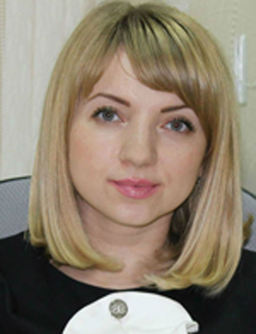

Контактная информация
Образование
Донецкий Национальный Технический Университет (ДонНТУ).
Специальность: Международная экономика.
Квалификация: Специалист по международной экономике.
Опыт работы
06.2012 – по наст.время ООО «ДТЭК Сервис»
Должность: Главный специалист департамента по проведению расчетов и платежей в ин.валюте.
01.2011 – 05.2012 ООО «ТДС Спецтехника»
Должность: Экономист.
Умения и навыки
Экономические знания: бюджетное планирование и контроль, анализ отклонений, CVP-анализ, калькулирование себестоимости с полным и переменым распределением затрат.
Компьютерные навыки: MS Office, 1С 7.7, 8.2, CRM, интернет-банкинг, клиент-банк, SAP ERP, ТМ5.
Знание языков: английский – pre-intermediate level.
Увлечения
- Увлекаюсь катанием на велосипеде и лыжах.
- Люблю комнатные растения, в частности бонсай.
- Коллекционирую кулинарные рецепты
- Как есть свободная минутка,люблю почитать про моду и косметологию
- С недавних пор, одно из увлечений - web разработка